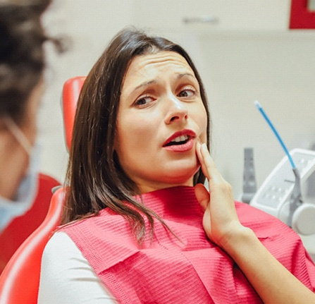
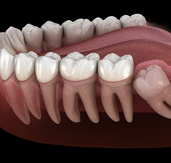
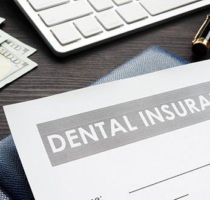

Welcoming New and Existing Patients
Sometimes called the third molars, wisdom teeth are the most frequently extracted teeth in the world today. While our caveman ancestors may have had use for them when their back teeth inevitably fell out, improved oral care and diet have made them largely vestigial in modern times. For most people, they simply don’t have enough room for them in their mouths! If your wisdom teeth start to come in and are causing pain or shifting nearby teeth, you can trust us to take care of you with wisdom tooth extractions in Grafton, WI at Sweet Smiles Family Dentistry. Call our dental office today to schedule an appointment!

Wisdom teeth are the large molars that usually grow in at the very back of each side of the jaw. Often, they are the very last teeth to erupt through the gum line, pushing through into what may be an already crowded lineup of pearly whites. When there is not enough space in the mouth, wisdom teeth may become impacted, which means they fail to erupt or grow in at an odd angle. When this happens, swelling, pain and tenderness can occur, which is why many people opt for wisdom teeth removal.

The most common sign that the wisdom teeth need to be removed is pain towards the back of the mouth, particularly if it develops between the ages of 18 and 25. This is when the wisdom teeth most commonly erupt and have the potential to cause major disruptions in the smile. If a wisdom tooth becomes impacted (stuck), it can be trapped underneath existing teeth and develop an infection. Other signs you may need your wisdom teeth extracted include:
While wisdom tooth extraction is very common, not all third molars must be removed. If your wisdom teeth or those of your child have fully grown in and are not causing overcrowding or consistent discomfort, you may not need to extract them. However, it always best to check with a dental professional. That is why we recommend scheduling routine checkups at Sweet Smiles Family Dentistry every six months.
Wisdom tooth extraction is considered a routine procedure and can typically be completed in a short amount of time at our dental office in Grafton.
Your dentist will first numb your wisdom teeth and the surrounding areas so you do not feel any discomfort during extraction. If your wisdom teeth are impacted, a small incision will be made in the gum line. Next, your dentist will use forceps to remove the wisdom tooth by gently rocking it back and forth until it detaches. Larger teeth may need to be sectioned into smaller pieces before being removed.
Once your wisdom teeth have been successfully extracted, your dentist will close the surgery site with sutures and ask you to bite down on a piece of gauze to help a blood clot form. Then the healing process officially begins!
Before your leave our dental office, we will be sure to provide you with full aftercare instructions. Your dentist may also provide a prescription for medication to relieve any lingering discomfort.
Wisdom teeth can seem to cause nothing but trouble for some patients. One of the factors that many people worry about is the cost of their extractions, so we’re here to help. During your consultation, we will discuss the financial aspects of your treatment in detail, including your payment options. Until then, here are some things to take into consideration.

The cost of wisdom tooth extractions can vary on a variety of factors. Here are the two that have the biggest influence on cost:

Wisdom tooth extractions are considered by most dental insurance plans to be a “major restorative procedure.” This means that is generally covered at about 50% when deemed to be medically necessary. However, every plan is different, so it is a good idea to confirm this with your provider ahead of time. We would also be happy to help you with this process. At Sweet Smiles Family Dentistry, we are proud to be in-network with numerous popular dental insurance plans. If you have any questions regarding your plan, feel free to contact us.

If you don’t have dental insurance, this doesn’t necessarily mean that you will be left completely on your own. By joining our In-Office Discount Plan, you can receive many of the same benefits as dental insurance, including discounts on treatments completed at our practice. We are also happy to accept payments through CareCredit – a third-party financing company that can split the cost of your treatment into manageable monthly installments with little to no interest. To learn more about your financing options, don’t hesitate to speak to one of our friendly team members.
You can eat as soon as the numbing agent wears off and you feel hungry. Make sure that you stick to liquids at first, like fruit smoothies without seeds. Then, start incorporating soft foods that require little-to-no chewing, like applesauce and plain yogurt. As time goes on, you’ll be able to eat a more varied diet. Just make sure not to rush it; eating something crunchy, hard, or sticky too soon can result in significant discomfort.
If your wisdom teeth are resulting in discomfort – whether minor or significant – the only way to alleviate your pain is by having them removed. The procedure will be completely painless since your mouth will be numbed, and we will provide you with aftercare instructions to ensure your recovery goes smoothly as well. A few examples include sleeping with your head elevated, sticking to soft foods, and taking OTC pain medication as directed. If you’re still experiencing soreness, sensitivity, or discomfort beyond the five-day mark, then give us a call.
There are a few things you need during your recovery, like prescribed or OTC pain medication and soft foods. You also will need someone to drive you home from your appointment, especially if dental sedation is a part of your treatment plan. So, it’s a good idea to go shopping beforehand and arrange for a trusted adult to drive you to and from our office. If possible, have them stay with you the first 24 hours too so they can make sure you’re drinking water, prepare soft foods for you, and help you change your gauze pads.
Sometimes, yes! For example, if you’re at an increased risk of cysts, infections, and other oral health problems because there simply isn’t enough room in your mouth for your wisdom teeth, then you should have them removed. It’s also possible for them to create orthodontic issues, which can be especially frustrating if you’ve had braces in the past.
No, removing your wisdom teeth won’t hurt. That’s because we numb that area of your mouth thoroughly. So, the most you will feel is some pressure from time to time as our Grafton dental team works to remove your third set of molars and tend to the extraction site. As we mentioned above, we will also give you instructions for once you return home with the goal of helping you heal painlessly as well.
Immediately following your wisdom tooth removal, you should not use a straw. Since the blood clot can dislodge even days after your procedure, we don’t recommend using one for at least two or three days.
Note: You should also avoid spitting, smoking, or doing anything else that can irritate the extraction site.
9:00am – 6:00pm
9:00am – 6:00pm
9:00am – 6:00pm
9:00am – 6:00pm
8:00am – 2:00pm